Relais & Châteaux · Reit im Winkl, Chiemgau
Zeit ist der wahre Luxus. Hier finden Sie sie wieder.
51 Hektar eigenes Land. Sieben Chalets. 2.000 m² Spa. Und eine Küche, die den Chiemgau auf den Teller bringt.
Seit 1435 wird dieses Stück Land bewirtschaftet — erst als Bauerngut, dann als Ziegelei, heute als das einzige Relais & Châteaux-Haus im Chiemgau. Geblieben ist, was zählt: Land, Tiere, Handwerk. Und die Gewissheit, dass echte Erholung keine Inszenierung braucht. Nur Raum zum Atmen.
01 Das Gut
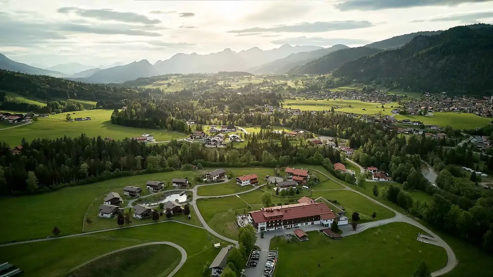
Gewachsen, nicht gebaut.
Ein Gut, das seit 590 Jahren bewirtschaftet wird, verkauft keine Kulisse. Es hat keine nötig.
Hinter dem Haus grasen Ziegen, im Gehege steht Rotwild, im Garten wachsen die Kräuter für die Küche. 2011 übernahm die Familie von Moltke das Gut — mit einem Leitsatz, der bis heute gilt: keine Umbauten der Geschichte, sondern ihre konsequente Weiterführung.
Erste Bewirtschaftung des Guts — seither ohne Unterbrechung in Nutzung.
Hektar
Eigenes Land mit Rotwild, Ziegen, Hühnern und Kräutergarten. Bioland-zertifiziert.
:80
80 % der Zutaten aus höchstens 80 Kilometern Umkreis — das Prinzip der Küche.
m²
Heimat & Natur SPA mit 16-Meter-Pool, drei Saunen und Naturweiher.
02 Übernachten
Schlafen Sie, wie Sie wollen. Nicht, wie es üblich ist.
Vom ruhigen Zimmer im Haupthaus bis zum eigenen Chalet mit privater Sauna — immer inklusive: Gutsfrühstück und 2.000 m² Spa.
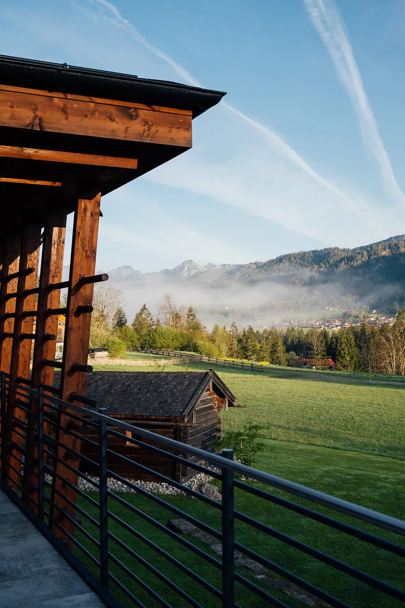
Zimmer
ab 149 € / Nacht
Warmes Holz, Bergblick, tiefer Schlaf. 15 bis 30 m² im Haupthaus, drei davon mit historischem Kachelofen.
Zimmer ansehen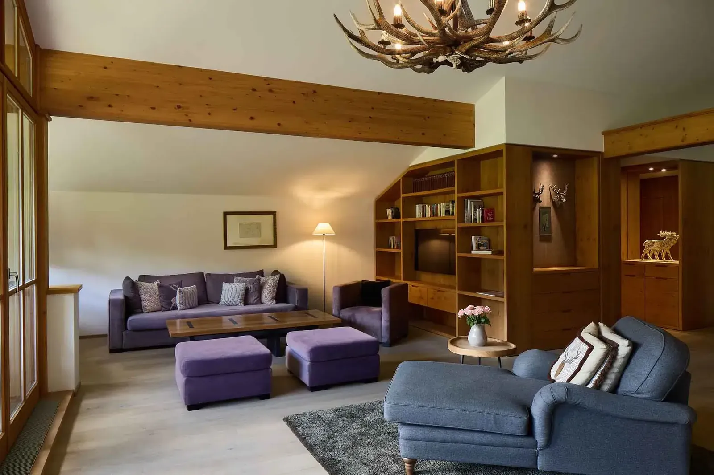
Suiten
ab 289 € / Nacht
Bis 110 m² mit Kachelofen, zwei Bädern oder eigener Küche — Raum für Familie oder für sich.
Suiten ansehen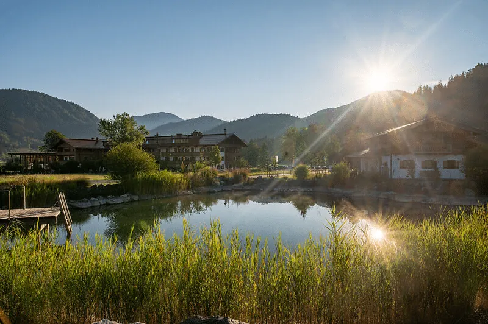
Chalets
150–185 m²
Ihr eigenes Haus auf dem Gut: private Sauna, Gaskamin, Vollküche — und das Frühstück kommt an die Tür.
Chalets entdecken03 Die Chalets
Sieben Chalets. Sieben Namen. Ein Gefühl: angekommen.
150 bis 185 Quadratmeter für Sie allein. Der Gaskamin knistert, die Infrarot-Sauna heizt bis 95 Grad, der Wein ist temperiert. Morgens stellt Ihnen das Gutsteam das Frühstück leise vor die Tür — und der Tag gehört Ihnen.
- Private Sauna
- Gaskamin
- Weinkühlschrank
- Vollküche
- Terrasse
- bis 6 Personen
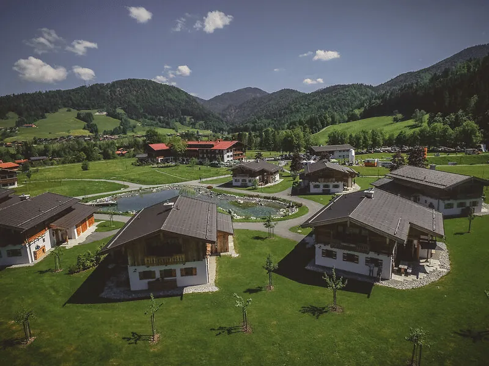
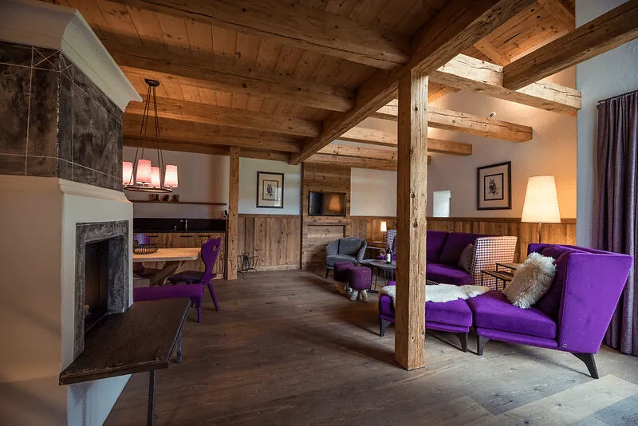
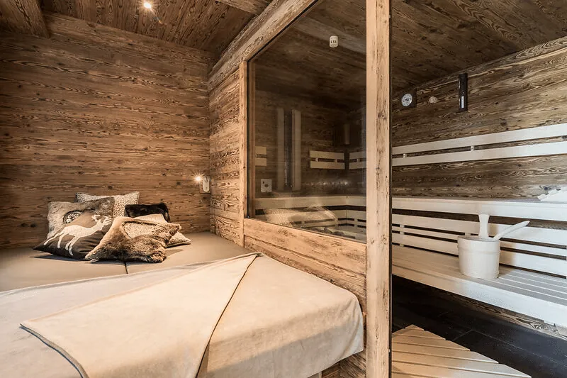
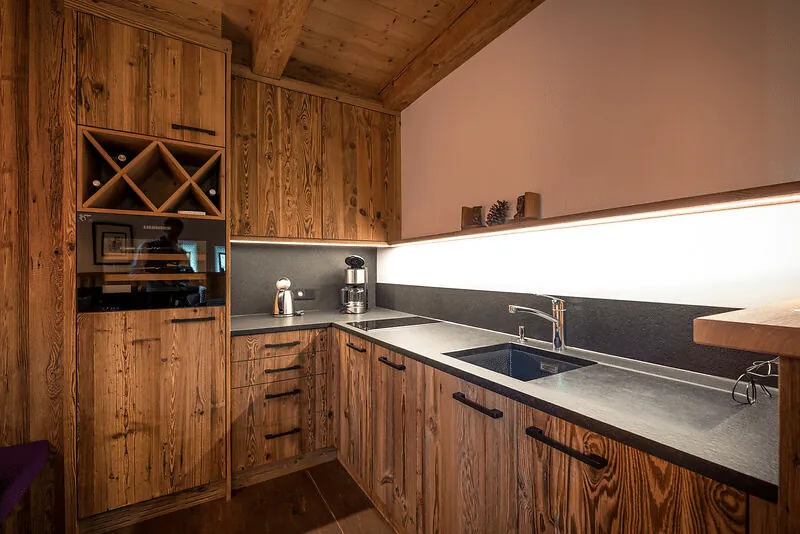
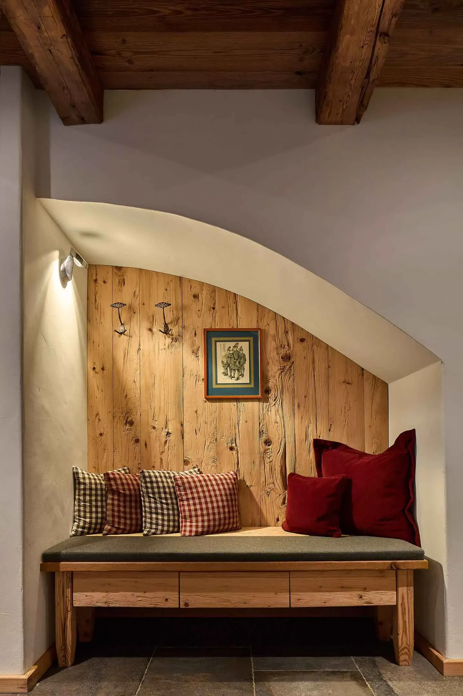
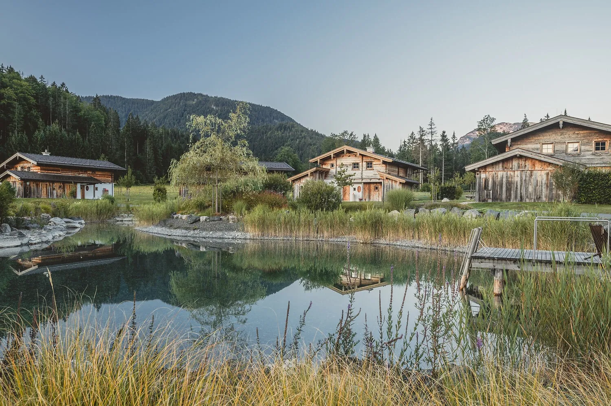
04 Kulinarik
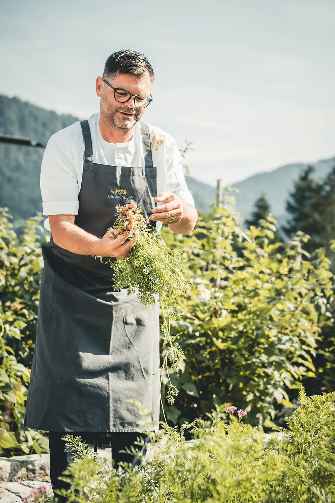
Heimat schmeckt man.
Küchenchef Achim Hack kocht nach einem einfachen Prinzip: 80 Prozent der Zutaten aus höchstens 80 Kilometern.
Die Kräuter wachsen hinterm Haus, das Wild kommt aus eigener Haltung, die Brezn morgens von der Bäckerei Pretzner. Der Guide Michelin würdigt das mit dem Grünen Stern — auf dem Gut nennt man es Selbstverständlichkeit.
05 Heimat & Natur SPA

2.000 Quadratmeter, null Gedanken.
16 Meter Pool bei 26 Grad. Drei Saunen von 60 bis 90 Grad. Ein Naturweiher zum Abkühlen.
Dazu Ruheräume mit Blick auf die Chiemgauer Alpen, BABOR-Behandlungen und Massagen mit Alpensalz. Wer mag, beginnt den Tag mit Yoga — oder einfach mit dem Blick auf die Wiese.
08 Angebote
Ihre Auszeit, konkret gemacht.
Frühbucher sparen 10 %, Sparangebote bis 15 %. Immer inklusive: Gutsfrühstück und Spa.

Alpine Ruhe
Drei Nächte, eine Alpine-Balance-Massage mit Alpensalzpeeling, viel Zeit im Spa — und sonst nichts.
ab 549 € p. P.3 Nächte inkl. Frühstück & Spa
Angebot ansehen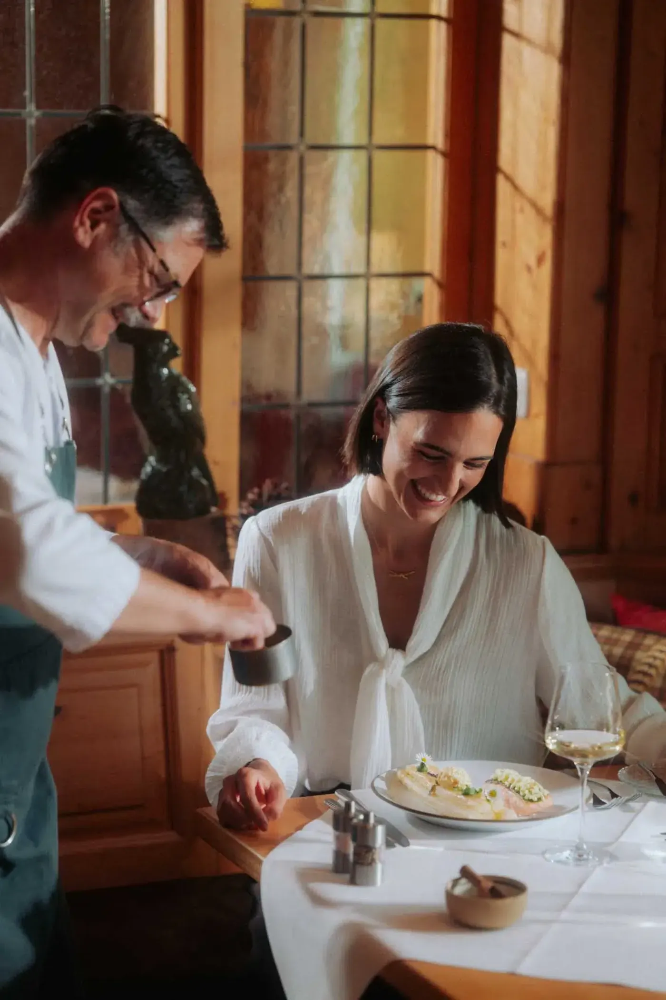
Genießer-Tage
Zwei Nächte mit HEIMAT-Menü am Abend: 80 Prozent der Zutaten aus 80 Kilometern, ausgezeichnet mit dem Grünen Stern.
ab 439 € p. P.2 Nächte inkl. 3-Gänge-Menü
Angebot ansehen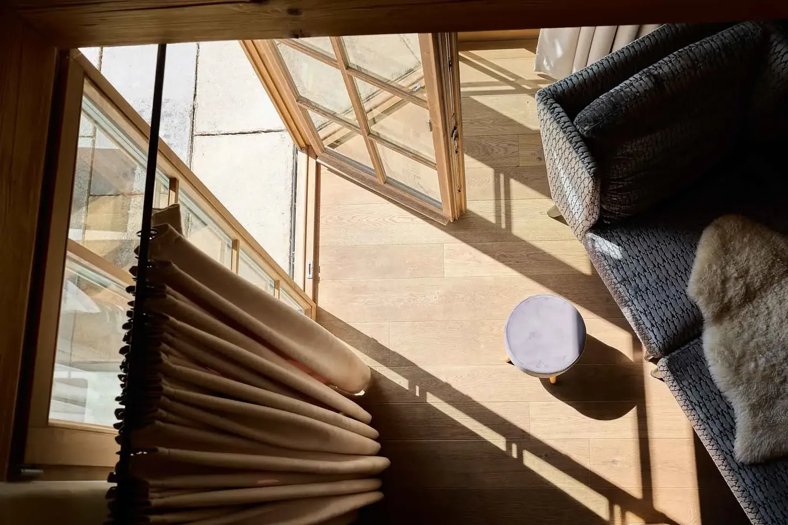
Chalet-Woche
Sieben Nächte im eigenen Haus auf dem Gut. Private Sauna, Kamin, Frühstück an der Tür — die lange Version des Durchatmens.
auf Anfrage7 Nächte, bis 6 Personen
Angebot ansehen„Keine Umbauten der Geschichte, sondern ihre konsequente Weiterführung."
09 Direkt buchen
Direkt gebucht ist besser gebucht.
- Bester verfügbarer Preis — garantiert auf gutsteinbach.de
- Kostenfreie Stornierung bis 7 Tage vor Anreise
- Frühbucher sparen 10 %, Sparangebote bis 15 %
- Persönliche Beratung von Menschen, die das Haus kennen
Lieber persönlich? +49 8640 807-0 oder reservierung@gutsteinbach.de
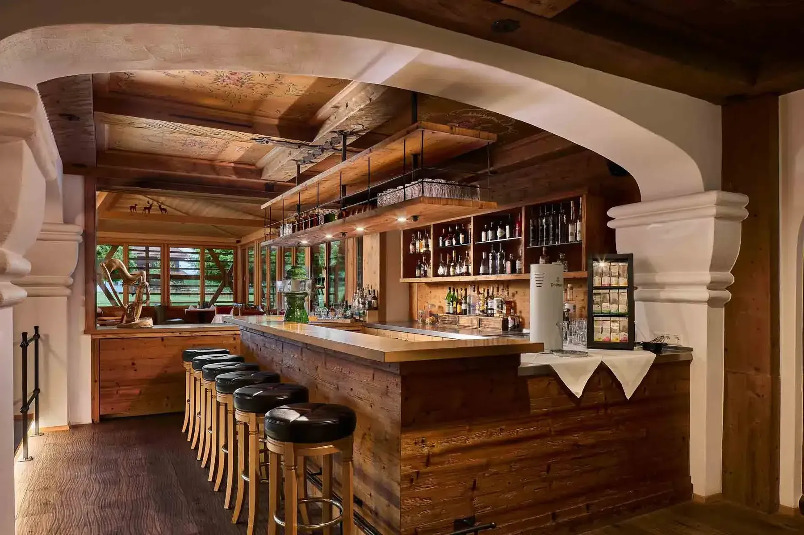